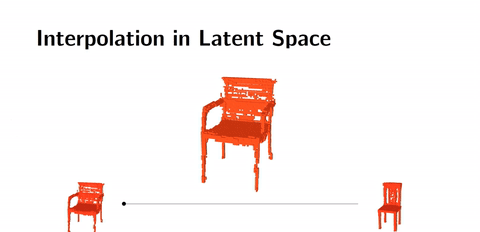

Neuronale Netze
und wie man damit nicht nur Probleme aus der Biochemie löst
Thomas Bergwinkl @bergi_bergos
CTO@Zazuko
Agenda
- Grundlagen & Frameworks
- In der Praxis
- Lessons Learned & Ausblick
Neuronale Netze - Grundlagen
Wie funktionieren Neuronale Netze?
Neuron
- Input - Wert am Eingang des Netzes oder Verbindung(en) zu anderen Neuronen
- Threshold/Bias - Wird zum Input addiert
- Activation Function - Gibt den Output auf Basis Input + Bias zurück
{kind=link}
Activation Function
- Sigmoid
- ReLU
- Softmax
- ...

{kind=link}
Connections
- Weights - Wird mit dem Input (Output des vorherigen Neurons) multipliziert
- Transfer Function - Summe aller Input * Weights
Netzwerk Typen

Fully Connected
Convolutional Neural Network (CNN)
Recurrent Neural Network (RNN, LSTM)
{kind=link}
Training/Learning
Ablauf
- Das Netzwerk wird mit Input Daten gefüttert und durchlaufen
- Der Output wird mit dem erwartetem Output verglichen
- Weights und Bias werden mit Hilfe von Backpropagation angepasst
Die Backpropagation kann in Batches durchgeführt werden
In gewissen Intervallen wird ein Test / eine Validation durchgeführt
Typen
Supervised learning
Vordefiniertes Dataset an Paaren von Input/Output.
Unsupervised learning
Vordefiniertes Dataset für den Input aber der Output wird nur durch eine Cost Function beschrieben
Reinforcement learning
Das Neuronale Netz kann bestimmte Aktionen ausführen und bekommt dafür positive oder negative Belohnungen
Software
Keras
- High Level API für TensorFlow, CNTK, ...
- Wenig Zeilen Code notwendig
- von Google
- Bestandteil von TensorFlow
Tensorflow
- von Google
- Mobile Device bis GPU Cluster
Microsoft Cognitive Toolkit (aka CNTK)
- von Microsoft
MXNet
- Apache Projekt
- Framework der Wahl von Amazon
- Mobile Device bis GPU Cluster
Caffe2
- von Facebook
- Mobile Device bis GPU Cluster
Deeplearnjs
- Browser
- GPU Support
- Training läuft auch im Browser
- von Google
Use Cases
Image classification
Kategorisieren von Bilder
Quelle: You Can Really Download The Not HotDog App From ‘Silicon Valley’Text-to-Speech (TTS)


{kind=link}
3D Object Generation
 Quelle: MediumIn der Praxis - Protein Ligand Binding
Wieso möchte man wissen an welches Protein sich ein Molekül sich bindet?
Je nach Use Case soll ein Molekül an bestimmte Proteine binden und andere Bindungen meiden.
Beispiel - Opioidrezeptoren
| Typ | Lokalisation | Wirkung |
|---|---|---|
| μ1 und μ2 | Gehirn | Analgesie, Herz-Kreislauf-Wirkungen |
| μ2 (MOR bzw. OP3) | spinal, supraspinal | Analgesie, Atemdepression, Euphorie, Magen-Darm-Wirkung, Sucht |
| μ | peripher | Analgesie, Magen-Darm-Wirkung, Juckreiz |
| κ (Kappa) (KOR bzw. OP2) | Gehirn, spinal | Analgesie, Sedierung, Dysphorie |
| δ (Delta) (DOR bzw. OP1) | Gehirn, spinal, peripher | Magen-Darm-Wirkung, modulierende Wirkung |
vereinfacht
tatsächlich
{kind=link}
{kind=link}
Idee
- Die Information der Bindungsaffinität vieler Moleküle zu einem Protein beschreibt das Protein selbst
- Wird ein Neuronales Netz mit diesen Informationen gefüttert, beschreibt das Neuronale Netz das Protein
- So lässt sich sich die Bindungsaffinität für bisher unbekannte Moleküle prognostizieren
Umsetzung
Architektur/Topologie des Modells
Protein Binding
Wie bekommt man die Graph Struktur eines Moleküls in ein Neuronales Netz?SMILES ist ein chemischer Strukturcode welcher sich mit ASCII darstellen lässt:
COc1cc(CCN)c(OC)cc1Br
Der SMILES String wird in Tokens aufgeteilt:
C˽O˽c˽1˽c˽c˽(˽C˽C˽N˽)˽c˽(˽O˽C˽)˽c˽c˽1˽Br
Für jeden möglichen Token gibt es einen Input:
| C | 0 | c | 1 | ( | ) | N | Br |
|---|---|---|---|---|---|---|---|
| 1 | 0 | 0 | 0 | 0 | 0 | 0 | 0 |
| 0 | 1 | 0 | 0 | 0 | 0 | 0 | 0 |
| ... | |||||||
| 0 | 0 | 0 | 0 | 0 | 0 | 0 | 1 |
Ein LSTM Netzwerk verarbeitet den Input und gibt über einen Output die Wahrscheinlichkeit zurück
allgemein
- Daten müssen in Dimensionen geordnet werden mit vorher definierten Größen (z.B. Bilder in Width*Height*Color Channels)
- CNN sollten für räumliche Daten verwendet werden
- RNN und LSTM können für räumliche Daten mit variablen längen verwendet werden, sind jedoch aufwändiger zu trainieren
- Ähnliche Use Cases oder Input/Output Datenstrukturen als Vorlage verwenden
Datenquellen
Protein Binding
- ChEMBL hat einen SPARQL Endpoint, enthält aber zu wenig Datensätze (insbesondere Not-Binding)
- Das CSV der PDSB Ki database enthält mehr Daten, muss aber erst konvertiert werden
- Das CSV der BindingDB ist deutlich umfangreicher, jedoch aufwändiger zu bereinigen
Die Daten der BindingDB wurden verwendet, da ansonsten die Daten für das Training nicht gereicht hätten.
allgemein
- Mehr Daten sind immer besser
- Mindestens 10% eurer Datensätze werden für das Test/Validation Set benötigt
- Evtl. müssen Rohdaten herangezogen werden
- Konvertierung in ein benutzerfreundliches Format von Vorteil
- Ihr werdet die Daten nicht nur einmal anfassen...
Preprocessing
Um das Neuronale Netz mit Daten zu füttern müssen die Daten fast immer umstrukturiert und umgewandelt werden.
Protein Binding
Es wurden Tools in JavaScript entwicklet um:
- die Datensätze zu filtern und sortieren
- Statistiken zu generieren (Anzahl Datensätze, Verteilung)
- alternative Darstellungen zu generieren
- die Datensätze "Neural Network Ready" zu mappen
allgemein
Sollten Tools bereitstehen um die Daten einfach zu filtern, sortieren, transformieren und zu analysieren. Für den Browser gibt es z.B. Facets von Google.
Data Augmentation
Unter Data Augmentation versteht man das automatische anpassen der Datensätze um weitere Datensätze für das Training zu generieren.
Protein Binding
Verschiedene Wege der Traversierung eines Moleküls ergeben unterschiedliche SMILES Darstellungen.
allgemein
- Nützliches Tool um mehr Daten/Varianten zu generieren.
- Es sollte darauf geachtet werden, dass am Ende noch Daten vorhanden sind.
Training
Protein Binding
- verschiedene Parameter für Dataset und Modell wurden getestet
- Keras Gaia - Ein Tool für Keras verarbeitet diese Sets von Parametern als Projekt
- Input und Output von Keras sind NumPy Arrays
- Eine Abstraktion über Namespaces erlaubt das einfach tauschen von Dataset und Modell
- Mehere Projekte wurden definiert, Datasets generiert und liefen dann als Jobs über meherere Tage
allgemein
- Trial and Error - Es werden einige Sets an Parametern durchprobiert werden müssen
- Die Modelle müssen angepasst werden
- Training Jobs dauern lange (oft Tage)
- Mit kleinen Datasets und Modellen starten um in kurzen Intervallen die Ergebnisse prüfen zu können
- Von Google gibt es Tensor2Tensor welches diesen Prozess unterstützen kann
Heureka!
Protein Binding
allgemein
-
Es funktioniert nicht immer:
- Datenqualität zu schlecht -> Aufräumen
- Problem zu komplex -> auf schnellere GPUs warten
- Das Modell und die Weights des besten Trainings können über die meisten Frameworks als Funktion bereitgestellt werden.
- Wrapper für die Funktion bauen, da die Datenstrukturen für das Neuronale Netz oft angepasst werden müssen (Microservice)
Lessons Learned & Ausblick
Lessons Learned
- Publish your failures!
- Neuronale Netze sind in einige Domänen Greenfield Projects
- In der akademischen Welt sind Erkenntnise jenseits von Papers nicht existent
Ausblick - Biochemie
Ausblick - Software
Tools für die Abstraktion der Daten und das Modell
UIs
- Für die Erstellung der Modelle
- Zum definieren der Training Jobs
Automatisch generierte Netzwerk Architekturen
Ausblick - Hardware
- Tensor Processing Unit
- und in fast jedem anderem Chipset
Ausblick - Use Cases
- Autonomes Fahren
- Verteilte Neuronale Netze (IPFS, Internet of Things, ...)
- Neuronale Netze erstellen Programme
- und in jedem anderen denkbarem Bereich
Noch Fragen?
Links
- Ligand binding affinity prediction using deep learning - Blog Post zum Projekt
- Neural Networks and Deep Learning - online Book von Michael Nielsen
- Artificial Neural Networks - Wikibook